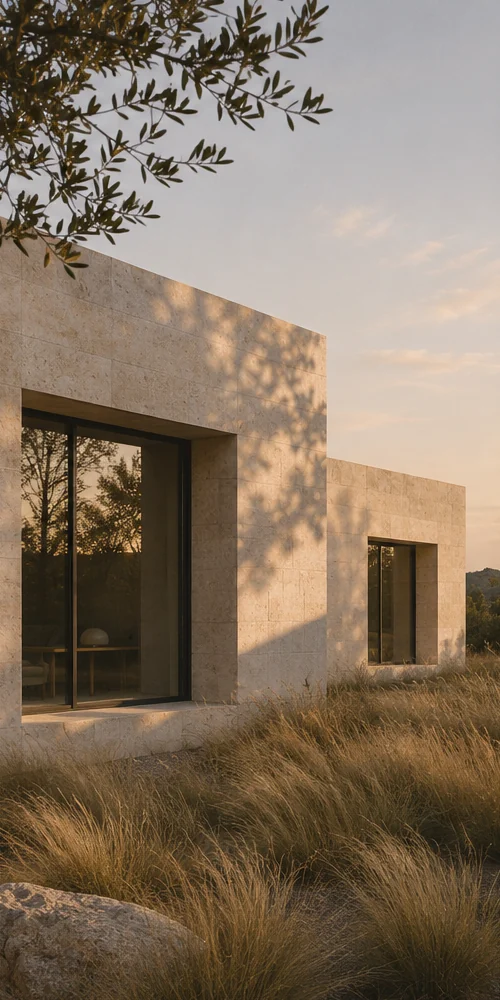
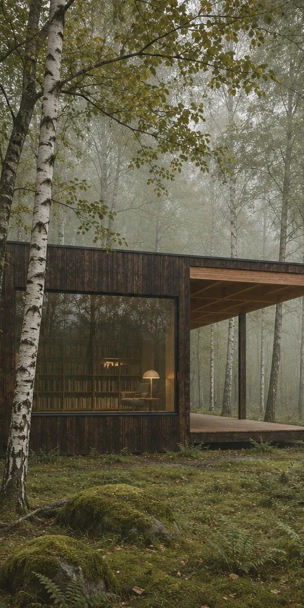
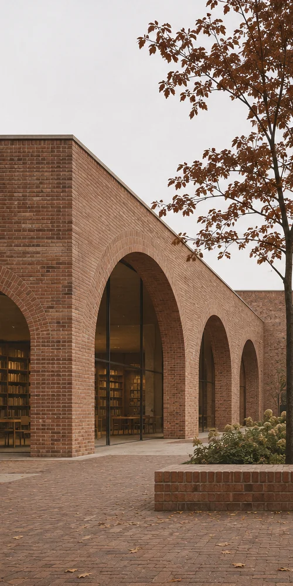

Дом у склона
Жилой дом
Архитектурное бюро
Проектируем дома и общественные пространства. Начинаем с того, как люди будут пользоваться зданием и как оно впишется в окружение.

Жилой дом

Павильон

Библиотека
«Линия» представляет собой учебный проект архитектурного бюро. В портфолио собраны три концепции: частный дом, павильон для чтения и районная библиотека.